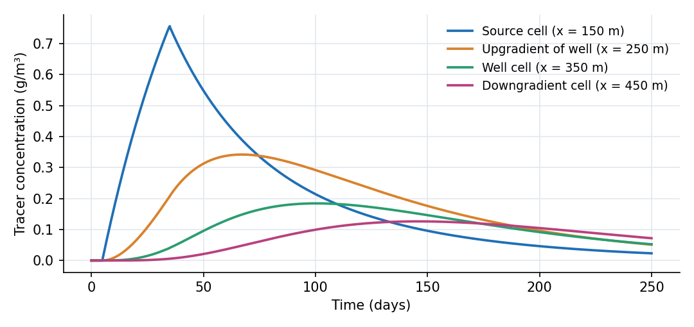
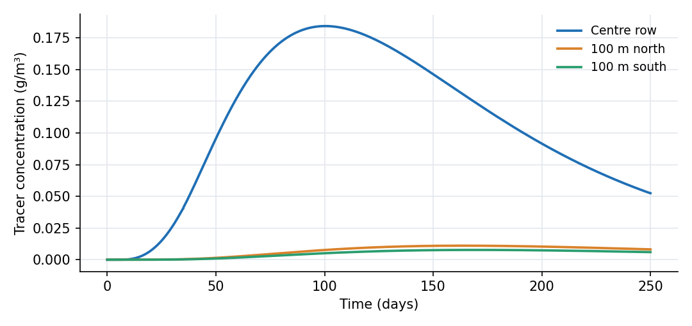
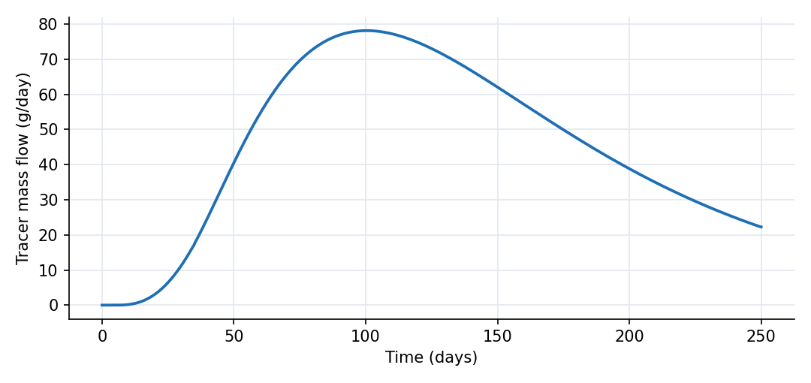
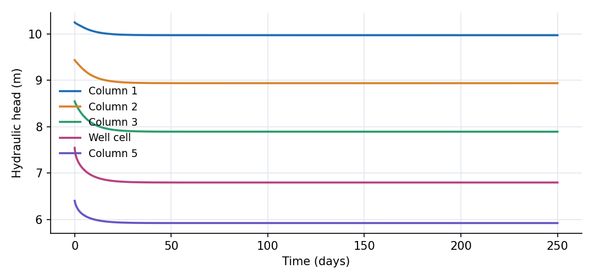

What this model represents
A soluble contaminant is released for 30 days into a shallow saturated aquifer. Regional groundwater flows from the western boundary toward the eastern boundary. A recovery well two cells downgradient of the release lowers the local head and intercepts part of the moving plume.
The example is deliberately small enough to inspect: a 5 × 5 finite-volume grid with 100 m cells. It is a transport-focused companion to the existing Well Field and Water Supply Network example. That model emphasizes pumping hydraulics and infrastructure; this one emphasizes where contaminant mass goes and how a recovery well changes the plume.
How it works
Groundwater flow
Every active cell is a saturated Groundwater cell. Its initial water storage is
S = A b θ
with plan area A = 10,000 m², thickness b = 10 m and water content θ. Head responds to storage through
h = z_b + b + (θ − n)/S_s
where z_b = 0 m, porosity n = 0.30 and specific storage S_s = 0.01 1/m. Initial water contents set a west-to-east head gradient. The large boundary cells remain practically fixed at 11 m in the west and 5 m in the east.
Flow between cells follows Darcy's law:
Q = A_f K_avg (h_s − h_e) / L
where interface area A_f = 1,000 m², link length L = 100 m and K_avg is the mean hydraulic conductivity of the two cells (50 m/day here). The model solves all cell storages together, so pumping-induced drawdown changes both horizontal and transverse flows.
Extraction_Well is an idealized constant-head recovery sink at 5 m. Its connection to Cell_3_4 is 10 m long with an effective area of 23.5 m². The initial recovery flow is 298 m³/day and declines to about 211 m³/day by day 250 as the surrounding grid adjusts. This is a capture-boundary representation, not a resolved wellbore.
Tracer transport
The source adds 1,000 g/day of conservative Tracer to Cell_3_2 from day 5 to day 35, a total of 30 kg. For every link OpenHydroQual computes
M_dot = Q C_up + [(D A_f + α Q)/L] (C_s − C_e)
where the first term is upstream advection, D = 1 m²/day is an effective diffusion coefficient and α = 10 m is dispersivity. The same transport equation applies to the recovery connection, so Well_Capture_Tracer:masstransfer is the recovered contaminant mass rate.
The 100 m cells are mixed control volumes. Their mixing creates additional numerical dispersion, as any finite-volume model of this resolution does.
What to look for in results
- Travel time. The source cell peaks at 0.756 g/m³ on day 35. The next centreline cell peaks at 0.342 g/m³ on day 67, the well cell at 0.184 g/m³ on day 100, and the final active column at 0.126 g/m³ on day 146. Advection moves the pulse east while mixing and dispersion broaden it.
- Recovery. Captured tracer mass flow peaks at 78.2 g/day near day 100. By day 250 the extraction sink has received about 11.5 kg, 38% of the injected tracer.
- Downgradient escape. About 11.4 kg has crossed the eastern boundary by day 250. The 25 active cells still hold about 6.8 kg, so the plume has not completely left the domain.
- Transverse spread. At the well column, the cells immediately north and south peak near 0.011 and 0.008 g/m³. Their lower concentrations show that most mass remains near the release centreline, while cross-gradient flow and diffusion spread a small amount sideways.
- Capture is incomplete. The well intercepts a substantial fraction but does not create a domain-wide capture zone. Some plume mass continues east past the well cell. This is the useful design question exposed by the example: change recovery head, connection conductance or well location and compare the captured fraction.
Assumptions and limitations
- The aquifer is homogeneous, isotropic, fully saturated and represented by one vertical layer. Vertical gradients, layering and density effects are omitted.
- The Tracer is conservative. Sorption, decay, chemical reactions and nonaqueous phases are not represented.
- The extraction well is a constant-head sink implemented as a very large groundwater cell. It does not model wellbore storage, a pump curve or a specified pumping schedule.
- Cell mixing causes numerical dispersion. A grid-convergence study is needed before using travel times or peak concentrations for design.
- The 1 m²/day coefficient is an effective grid-scale diffusion term, much larger than molecular diffusion for most solutes. It is included to make transverse spreading visible in this compact example.
- The large boundary and extraction cells dilute received tracer to nearly zero, so they act as clean infinite reservoirs. This is appropriate for a boundary-condition example but not for recirculation or reinjection studies.
- The reported mass fractions are evaluated at day 250. About 23% of the release is still in the active grid, so longer simulation would increase both recovered and downgradient fractions.
Model diagram
Hover a block or link to see its name and type. Arrows show the positive flow direction.
Components
Click a component to see every property set in the model file, with units and meaning.
Blocks 28
Storage compartments: each holds water (and dissolved or particulate mass) and has a state that evolves in time.
24 × Groundwater cellGroundwater cell · groundwaterThe 25 active cells Cell_1_1 to Cell_5_5 form a 500 m × 500 m aquifer. Each cell is 100 m × 100 m × 10 m, with porosity 0.30, specific storage 0.01 1/m and hydraulic conductivity 50 m/day.
Cell_1_1, Cell_1_2, Cell_1_3, Cell_1_4, Cell_1_5, Cell_2_1, Cell_2_2, Cell_2_3 …
Showing properties of Cell_1_1.
Groundwater cell: Groundwater cell
| Property | Value | Unit | Meaning |
|---|---|---|---|
| Cell area | 10000 | m2 | |
| Bottom Elevation | 0 | m | Elevation of the bottom of the groundwater cell, used to determine hydraulic gradients and head. |
| Cell Depth | 10 | m | |
| Initial Moisture Content | 0.30247 | Computed as Storage/(depth*area) | |
| Porosity | 0.3 | The fraction of the total volume of the subsurface that is occupied by voids or pores, representing storage capacity. | |
| Specific Storage | 0.01 | 1/m | Volume of water released per unit volume of aquifer per unit change in head. Reflects aquifer compressibility. |
| Hydraulic Conductivity | 50 | m/day | Rate at which water can move through pore spaces or fractures in the subsurface. Influences groundwater flow velocity. |
| Tracer: Concentration | 0 | g/m3 | Computed as mass/(Storage+0.00001) |
Cell_3_2Groundwater cell · groundwaterTracer-source cell, 100 m inside the western half of the domain on the centre row. It receives the mass-loading pulse from tracer_source.csv.
Groundwater cell: Groundwater cell
| Property | Value | Unit | Meaning |
|---|---|---|---|
| Cell area | 10000 | m2 | |
| Bottom Elevation | 0 | m | Elevation of the bottom of the groundwater cell, used to determine hydraulic gradients and head. |
| Cell Depth | 10 | m | |
| Initial Moisture Content | 0.29434 | Computed as Storage/(depth*area) | |
| Porosity | 0.3 | The fraction of the total volume of the subsurface that is occupied by voids or pores, representing storage capacity. | |
| Specific Storage | 0.01 | 1/m | Volume of water released per unit volume of aquifer per unit change in head. Reflects aquifer compressibility. |
| Hydraulic Conductivity | 50 | m/day | Rate at which water can move through pore spaces or fractures in the subsurface. Influences groundwater flow velocity. |
| Tracer: Concentration | 0 | g/m3 | Computed as mass/(Storage+0.00001) |
| Tracer: External mass flow time-series | tracer_source.csv | g/day |
West_BoundaryGroundwater cell · groundwaterVery large Groundwater cell held effectively at head 11 m. Five links supply clean water from this western regional boundary to the grid.
Groundwater cell: Groundwater cell
| Property | Value | Unit | Meaning |
|---|---|---|---|
| Cell area | 10000000000 | m2 | |
| Bottom Elevation | 1 | m | Elevation of the bottom of the groundwater cell, used to determine hydraulic gradients and head. |
| Cell Depth | 10 | m | |
| Initial Moisture Content | 0.3 | Computed as Storage/(depth*area) | |
| Porosity | 0.3 | The fraction of the total volume of the subsurface that is occupied by voids or pores, representing storage capacity. | |
| Specific Storage | 0.01 | 1/m | Volume of water released per unit volume of aquifer per unit change in head. Reflects aquifer compressibility. |
| Hydraulic Conductivity | 50 | m/day | Rate at which water can move through pore spaces or fractures in the subsurface. Influences groundwater flow velocity. |
| Tracer: Concentration | 0 | g/m3 | Computed as mass/(Storage+0.00001) |
East_BoundaryGroundwater cell · groundwaterVery large Groundwater cell held effectively at head 5 m. Five links receive water and tracer leaving the eastern edge of the grid.
Groundwater cell: Groundwater cell
| Property | Value | Unit | Meaning |
|---|---|---|---|
| Cell area | 10000000000 | m2 | |
| Bottom Elevation | -5 | m | Elevation of the bottom of the groundwater cell, used to determine hydraulic gradients and head. |
| Cell Depth | 10 | m | |
| Initial Moisture Content | 0.3 | Computed as Storage/(depth*area) | |
| Porosity | 0.3 | The fraction of the total volume of the subsurface that is occupied by voids or pores, representing storage capacity. | |
| Specific Storage | 0.01 | 1/m | Volume of water released per unit volume of aquifer per unit change in head. Reflects aquifer compressibility. |
| Hydraulic Conductivity | 50 | m/day | Rate at which water can move through pore spaces or fractures in the subsurface. Influences groundwater flow velocity. |
| Tracer: Concentration | 0 | g/m3 | Computed as mass/(Storage+0.00001) |
Extraction_WellGroundwater cell · groundwaterVery large sink cell held effectively at head 5 m. It idealizes a fully penetrating constant-head recovery well; its large storage prevents recovered water and tracer from changing the imposed head or concentration appreciably.
Groundwater cell: Groundwater cell
| Property | Value | Unit | Meaning |
|---|---|---|---|
| Cell area | 1000000000 | m2 | |
| Bottom Elevation | -5 | m | Elevation of the bottom of the groundwater cell, used to determine hydraulic gradients and head. |
| Cell Depth | 10 | m | |
| Initial Moisture Content | 0.3 | Computed as Storage/(depth*area) | |
| Porosity | 0.3 | The fraction of the total volume of the subsurface that is occupied by voids or pores, representing storage capacity. | |
| Specific Storage | 0.01 | 1/m | Volume of water released per unit volume of aquifer per unit change in head. Reflects aquifer compressibility. |
| Hydraulic Conductivity | 50 | m/day | Rate at which water can move through pore spaces or fractures in the subsurface. Influences groundwater flow velocity. |
| Tracer: Concentration | 0 | g/m3 | Computed as mass/(Storage+0.00001) |
Links 51
Connections that move water (and the mass it carries) between blocks.
50 × groundwater_linkgroundwater_link · groundwaterForty links connect neighbouring active cells. Each has length 100 m and interface area 1,000 m². They carry Darcy flow and the Tracer by advection and dispersion.
Flow_1_1_1_2, Flow_1_2_1_3, Flow_1_3_1_4, Flow_1_4_1_5, Flow_2_1_2_2, Flow_2_2_2_3, Flow_2_3_2_4, Flow_2_4_2_5 …
Showing properties of Flow_1_1_1_2.
groundwater_link: Groundwater link
| Property | Value | Unit | Meaning |
|---|---|---|---|
| Length | 100 | m | |
| Interface Area | 1000 | m2 |
Well_Capturegroundwater_link · groundwaterShort groundwater link from Cell_3_4 to Extraction_Well. Its 23.5 m² effective interface gives an initial capture flow near 298 m³/day; flow falls as drawdown develops in the aquifer.
groundwater_link: Groundwater link
| Property | Value | Unit | Meaning |
|---|---|---|---|
| Length | 10 | m | |
| Interface Area | 23.5 | m2 |
Constituents 1
Substances or particles carried by the water.
TracerConstituentConservative dissolved constituent with longitudinal dispersivity 10 m and effective diffusion coefficient 1 m²/day. It has no decay or sorption.
Constituent: Chemical constituent
| Property | Value | Unit | Meaning |
|---|---|---|---|
| Concentration | 0 | g/m3 | Computed as mass/(Storage+0.00001) |
| Constant Inflow concentration | 0 | g/m3 | |
| Diffusion Coefficient | 1 | m2/day | |
| Dispersivity | 10 | m | |
| Interface exchange velocity | 0 | m/day | Link-specific mass-transfer velocity for exchange across an interface, e.g. hyporheic/bioturbation exchange between a channel and the bed or aggregate beneath it: exchange_velocity*area*(concentration.s-concentration.e), with area the link's interface area. Equivalent to an effective diffusion coefficient D_eff = exchange_velocity*length. 0 (the default) leaves the link without it. |
| Stoichiometric Constant | 0 |
Input files
tracer_source.csv | Tracer loading (g/day) versus time (day): 1,000 g/day from day 5 to day 35, for a total release of 30 kg. |
Simulation settings
| Start time | 0 |
| End time | 250 |
| Initial time step | 0.05 |
| Write interval (steps) | 5 |
| Newton-Raphson tolerance | 1e-06 |
Results
Produced by running the downloaded model unchanged.



